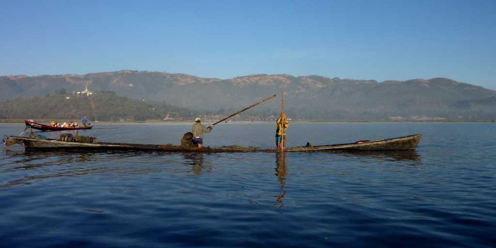
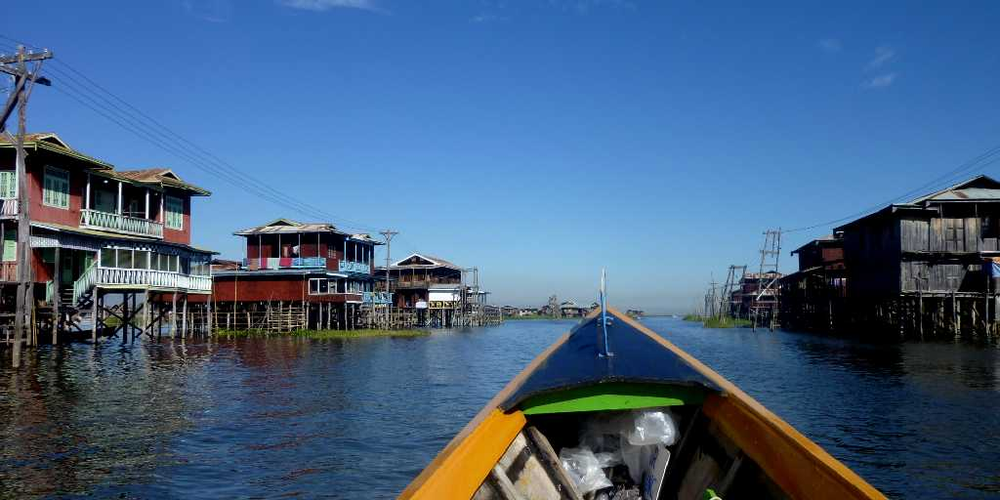
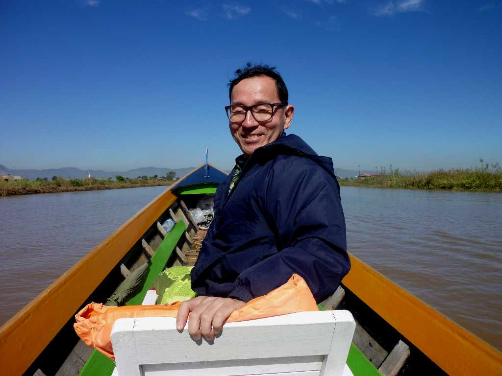

Inle Lake
インレー湖は標高１,３２８ｍに位置し南北２２ｋｍ東西１１ｋｍ雨季でも深さ僅か６ｍで浮島等には６４もの村々が点在する

Village in Inle Lake
インレー湖の村に住む少数民族はインダー族が多く周辺にはシャン族が住んでいるが文化や言語体系が全く異なるのでインダー族が南部から１４世紀ごろ移住してきたものと考えられている

December 27 2010 Cruise Inle Lake